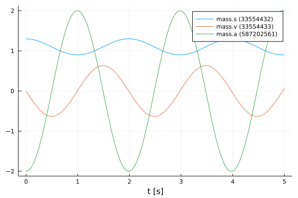
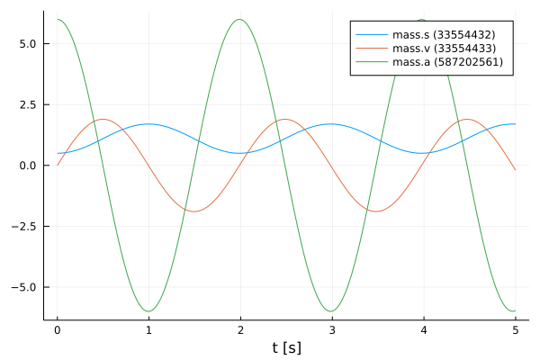
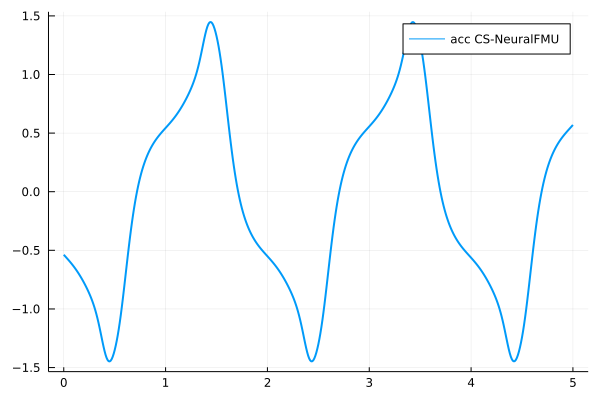
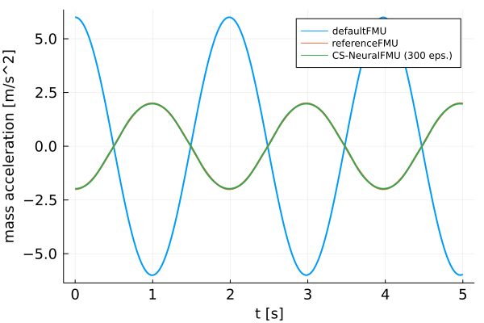

Creation and training of CS-NeuralFMUs
Tutorial by Johannes Stoljar, Tobias Thummerer
License
Copyright (c) 2021 Tobias Thummerer, Lars Mikelsons, Johannes Stoljar
Licensed under the MIT license. See LICENSE file in the project root for details.
Motivation
This Julia Package is motivated by the application of hybrid modeling. This package enables the user to integrate his simulation model between neural networks (NeuralFMU). For this, the simulation model must be exported as FMU (functional mock-up unit), which corresponds to a widely used standard. The big advantage of hybrid modeling with artificial neural networks is, that effects that are difficult to model (because they might be unknown) can be easily learned by the neural networks. For this purpose, the NeuralFMU is trained with measurement data containing the unmodeled physical effect. The final product is a simulation model including the orignially unmodeled effects. Another big advantage of the NeuralFMU is that it works with little data, because the FMU already contains the characterisitic functionality of the simulation and only the missing effects are added.
NeuralFMUs need not to be as easy as in this example. Basically a NeuralFMU can combine different ANN topologies that manipulate any FMU-input (system state, system inputs, time) and any FMU-output (system state derivative, system outputs, other system variables). However, for this example a NeuralFMU topology as shown in the following picture is used.

NeuralFMU (CS) from [1].
Introduction to the example
In this example, the model of a one-dimensional spring pendulum (with an external acting force) is used to learn the initial states. For this purpose, on the one hand the initial position of the mass of the pendulum is shifted and on the other hand the default position of the mass from the model is used. The model with the shifted initial position serves as reference and is called referenceFMU in the following. The model with the default position is further referenced with defaultFMU. At the beginning, the actual state of both simulations is shown, whereby clear deviations can be seen in the graphs. Afterwards, the defaultFMU is integrated into a co-simulation NeuralFMU (CS-NeuralFMU) architecture. By training the NeuralFMU, an attempt is made to learn the initial displacement of the referenceFMU. It can be clearly seen that the NeuralFMU learns this shift well in just a few training steps.
Target group
The example is primarily intended for users who work in the field of first principle and/or hybrid modeling and are further interested in hybrid model building. The example wants to show how simple it is to combine FMUs with machine learning and to illustrate the advantages of this approach.
Other formats
Besides this Jupyter Notebook there is also a Julia file with the same name, which contains only the code cells and for the documentation there is a Markdown file corresponding to the notebook.
Getting started
Installation prerequisites
| Description | Command | Alternative | |
|---|---|---|---|
| 1. | Enter Package Manager via | ] | |
| 2. | Install FMI via | add FMI | add " https://github.com/ThummeTo/FMI.jl " |
| 3. | Install FMIFlux via | add FMIFlux | add " https://github.com/ThummeTo/FMIFlux.jl " |
| 4. | Install Flux via | add Flux | |
| 5. | Install DifferentialEquations via | add DifferentialEquations | |
| 6. | Install Plots via | add Plots |
Code section
To run the example, the previously installed packages must be included.
# imports
using FMI
using FMIFlux
using Flux
using DifferentialEquations: Tsit5
import PlotsAfter importing the packages, the path to the Functional Mock-up Units (FMUs) is set. The FMU is a model exported meeting the Functional Mock-up Interface (FMI) Standard. The FMI is a free standard (fmi-standard.org) that defines a container and an interface to exchange dynamic models using a combination of XML files, binaries and C code zipped into a single file.
The objec-orientated structure of the SpringPendulumExtForce1D can be seen in the following graphic. This model is a simple spring pendulum without friction, but with an external force.

Here the path for the SpringPendulumExtForce1D is set:
pathFMU = joinpath(dirname(@__FILE__), "../model/SpringPendulumExtForce1D.fmu")
println("FMU path: ", pathFMU)FMU path: ../model/SpringPendulumExtForce1D.fmuNext, the start time and end time of the simulation are set. Finally, a step size is specified to store the results of the simulation at these time steps.
tStart = 0.0
tStep = 0.01
tStop = 5.0
tSave = tStart:tStep:tStop0.0:0.01:5.0ReferenceFMU
In the next lines of code the FMU of the referenceFMU model is loaded and instantiated.
referenceFMU = fmiLoad(pathFMU)
fmiInstantiate!(referenceFMU; loggingOn=false)
fmiInfo(referenceFMU)┌ Info: fmi2Unzip(...): Successfully unzipped 147 files at `C:\Users\JOHANN~1\AppData\Local\Temp\fmijl_ZVpiA1\SpringPendulumExtForce1D`.
└ @ FMI C:\Users\Johannes Stoljar\.julia\packages\FMI\l4qPg\src\FMI2.jl:273
┌ Info: fmi2Load(...): FMU supports both CS and ME, using CS as default if nothing specified.
└ @ FMI C:\Users\Johannes Stoljar\.julia\packages\FMI\l4qPg\src\FMI2.jl:376
┌ Info: fmi2Load(...): FMU resources location is `file:///C:/Users/JOHANN~1/AppData/Local/Temp/fmijl_ZVpiA1/SpringPendulumExtForce1D/resources`
└ @ FMI C:\Users\Johannes Stoljar\.julia\packages\FMI\l4qPg\src\FMI2.jl:384
#################### Begin information for FMU ####################
Model name: SpringPendulumExtForce1D
FMI-Version: 2.0
GUID: {b376bbba-5027-4429-a701-20b703fda94e}
Generation tool: Dymola Version 2020x (64-bit), 2019-10-10
Generation time: 2021-06-18T11:01:53Z
Var. naming conv.: structured
Event indicators: 0
Inputs: 1
352321536 ["extForce"]
Outputs: 2
335544320 ["der(accSensor.v)", "a", "accSensor.a"]
335544321 ["accSensor.v", "der(accSensor.flange.s)", "v", "der(speedSensor.flange.s)", "speedSensor.v"]
States: 2
33554432 ["mass.s"]
33554433 ["mass.v"]
Supports Co-Simulation: true
Model identifier: SpringPendulumExtForce1D
Get/Set State: true
Serialize State: true
Dir. Derivatives: true
Var. com. steps: true
Input interpol.: true
Max order out. der.: 1
Supports Model-Exchange: true
Model identifier: SpringPendulumExtForce1D
Get/Set State: true
Serialize State: true
Dir. Derivatives: true
##################### End information for FMU #####################Both the start and end time are set via the fmiSetupExperiment() function. In addition, the initial position of the mass is set to a value of $1.3m$ The experiment is initialized to get the information of the continuous states. You can get all continuous states of a FMU by the function fmiGetContinuousStates() and this is also done for the referenceFMU. It has two states: The first state is the previously initialized position of the mass, the second state is the velocity, which is initialized with $0\frac{m}{s}$.
fmiSetupExperiment(referenceFMU, tStart, tStop)
fmiSetReal(referenceFMU, "mass_s0", 1.3) # increase amplitude, invert phase
fmiEnterInitializationMode(referenceFMU)
fmiExitInitializationMode(referenceFMU)
x₀ = fmiGetContinuousStates(referenceFMU)2-element Vector{Float64}:
1.3
0.0In the following code block the referenceFMU is simulated, still specifying which variables are included. After the simulation is finished the result of the referenceFMU can be plotted. This plot also serves as a reference for the later CS-NeuralFMU model.
vrs = ["mass.s", "mass.v", "mass.a"]
_, referenceSimData = fmiSimulate(referenceFMU, tStart, tStop; recordValues=vrs, setup=false, reset=false, saveat=tSave)
fmiPlot(referenceFMU, vrs, referenceSimData)
The data from the simualtion of the referenceFMU, are divided into position, velocity and acceleration data. The data for the acceleration will be needed later.
posReference = collect(data[1] for data in referenceSimData.saveval)
velReference = collect(data[2] for data in referenceSimData.saveval)
accReference = collect(data[3] for data in referenceSimData.saveval)501-element Vector{Float64}:
-1.9999999999999996
-1.9989808107156004
-1.995976332371232
-1.9909821938997307
-1.9839989801021418
-1.9750314004124547
-1.9640884504035183
-1.951180580066516
-1.9363227134824257
-1.9195319560818125
-1.9008203166719828
-1.8802131771552166
-1.8577245801802755
⋮
1.9439538472626405
1.9581269688364755
1.970346615172437
1.9805952930006132
1.9888623187994514
1.9951388459819808
1.9994178648958127
2.0016968375647415
2.0019759530917005
2.0002523498984894
1.9965275218318568
1.9908049090723823DefaultFMU
The following is a reset for the referenceFMU and a renaming to defaultFMU. After the reset, the previous initial position of the mass is not set, so the default position of the defaultFMU is used. The first state indicates the position of the mass, which is initilized with $0.5𝑚$.
fmiReset(referenceFMU)
defaultFMU = referenceFMU
fmiSetupExperiment(defaultFMU, tStart, tStop)
fmiEnterInitializationMode(defaultFMU)
fmiExitInitializationMode(defaultFMU)
x₀ = fmiGetContinuousStates(defaultFMU)2-element Vector{Float64}:
0.5
0.0The following simulate and plot the defaultFMU just like the referenceFMU. The differences between both systems can be clearly seen from the plots. In the plots for the defaultFMU you can see that other oscillations occur due to the different starting positions. On the one hand the oscillation of the defaultFMU starts in the opposite direction of the referenceFMU and on the other hand the graphs for the velocity and acceleration differ clearly in the amplitude. In the following we try to learn the initial shift of the position so that the graphs for the acceleration of both graphs match.
_, defaultSimData = fmiSimulate(defaultFMU, tStart, tStop; recordValues=vrs, setup=false, reset=false, saveat=tSave)
fmiPlot(defaultFMU, vrs, defaultSimData)
The data from the simualtion of the defaultFMU, are divided into position, velocity and acceleration data. The data for the acceleration will be needed later.
posDefault = collect(data[1] for data in defaultSimData.saveval)
velDefault = collect(data[2] for data in defaultSimData.saveval)
accDefault = collect(data[3] for data in defaultSimData.saveval)501-element Vector{Float64}:
6.0
5.996982513180007
5.987986261034271
5.9730046030442665
5.95205107717745
5.925151171646224
5.892330901036602
5.853619029884401
5.809060133574773
5.758686483925127
5.702562314755022
5.640726974472335
5.5732600661315335
⋮
-5.817454106640481
-5.860262621029506
-5.897211631373532
-5.928264987575014
-5.953392775960465
-5.972564609104964
-5.985762763815119
-5.99297561097946
-5.994196580640214
-5.989425410415006
-5.9786675103892755
-5.961926527257058CS-NeuralFMU
In this section, the defaultFMU is inserted into a CS-NeuralFMU architecture. It has the goal to learn the initial state of the referenceFMU.
For the external force, a simple function is implemented that always returns a force of $0N$ at each time point. Also, all other functions and implementations would be possible here. Only for simplification reasons the function was chosen so simply.
function extForce(t)
return [0.0]
end extForce (generic function with 1 method)Loss function
In order to train our model, a loss function must be implemented. The solver of the NeuralFMU can calculate the gradient of the loss function. The gradient descent is needed to adjust the weights in the neural network so that the sum of the error is reduced and the model becomes more accurate.
The loss function in this implmentation consists of the mean squared error (mse) from the acceleration data of the referenceFMU simulation (accReference) and the acceleration data of the network (accNet). $ mse = \frac{1}{n} \sum\limits_{i=0}^n (accReference[i] - accNet[i])^2 $
# loss function for training
function lossSum()
solution = csNeuralFMU(extForce, tStep)
accNet = collect(data[1] for data in solution)
Flux.Losses.mse(accReference, accNet)
endlossSum (generic function with 1 method)Callback
To output the loss in certain time intervals, a callback is implemented as a function in the following. Here a counter is incremented, every twentieth pass the loss function is called and the average error is printed out.
# callback function for training
global counter = 0
function callb()
global counter += 1
if counter % 20 == 1
avgLoss = lossSum()
@info "Loss [$counter]: $(round(avgLoss, digits=5))"
end
endcallb (generic function with 1 method)Structure of the CS-NeuralFMU
In the following, the topology of the CS-NeuralFMU is constructed. It consists of an input layer, which then leads into the defaultFMU model. The CS-FMU computes the outputs for the given system state and time step. After the defaultFMU follows a dense layer, which has exactly as many inputs as the model has outputs. The output of this layer consists of 16 output nodes and a tanh activation function. The next layer has 16 input and output nodes with the same activation function. The last layer is again a dense layer with 16 input nodes and the number of model outputs as output nodes. Here, it is important that no tanh-activation function follows, because otherwise the pendulums state values would be limited to the interval $[-1;1]$.
# NeuralFMU setup
numInputs = length(defaultFMU.modelDescription.inputValueReferences)
numOutputs = length(defaultFMU.modelDescription.outputValueReferences)
net = Chain(inputs -> fmiInputDoStepCSOutput(defaultFMU, tStep, inputs),
Dense(numOutputs, 16, tanh),
Dense(16, 16, tanh),
Dense(16, numOutputs))Chain(
var"#15#16"(),
Dense(2, 16, tanh), [90m# 48 parameters[39m
Dense(16, 16, tanh), [90m# 272 parameters[39m
Dense(16, 2), [90m# 34 parameters[39m
)[90m # Total: 6 arrays, [39m354 parameters, 1.758 KiB.Definition of the CS-NeuralFMU
The instantiation of the CS-NeuralFMU is done as a one-liner. The FMU defaultFMU, the structure of the network net, start tStart and end time tStop, and the time steps tSave for saving are specified.
csNeuralFMU = CS_NeuralFMU(defaultFMU, net, (tStart, tStop); saveat=tSave);Plot before training
Here the state trajactory of the extForceFMU is recorded. Doesn't really look like a pendulum yet, but the system is random initialized by default. In the later plots, the effect of learning can be seen.
solutionBefore = csNeuralFMU(extForce, tStep)
Plots.plot(tSave, collect(data[1] for data in solutionBefore), label="acc CS-NeuralFMU", linewidth=2)
Training of the CS-NeuralFMU
For the training of the CS-NeuralFMU the parameters are extracted. The known ADAM optimizer for minimizing the gradient descent is used as further passing parameters. In addition, the previously defined loss and callback function, as well as the number of epochs are passed.
# train
paramsNet = Flux.params(csNeuralFMU)
optim = ADAM()
Flux.train!(lossSum, paramsNet, Iterators.repeated((), 300), optim; cb=callb)┌ Info: Loss [1]: 1.36812
└ @ Main In[13]:8
┌ Info: Loss [21]: 0.23761
└ @ Main In[13]:8
┌ Info: Loss [41]: 0.04257
└ @ Main In[13]:8
┌ Info: Loss [61]: 0.0265
└ @ Main In[13]:8
┌ Info: Loss [81]: 0.01623
└ @ Main In[13]:8
┌ Info: Loss [101]: 0.01005
└ @ Main In[13]:8
┌ Info: Loss [121]: 0.00617
└ @ Main In[13]:8
┌ Info: Loss [141]: 0.0038
└ @ Main In[13]:8
┌ Info: Loss [161]: 0.0024
└ @ Main In[13]:8
┌ Info: Loss [181]: 0.0016
└ @ Main In[13]:8
┌ Info: Loss [201]: 0.00113
└ @ Main In[13]:8
┌ Info: Loss [221]: 0.00086
└ @ Main In[13]:8
┌ Info: Loss [241]: 0.00069
└ @ Main In[13]:8
┌ Info: Loss [261]: 0.00058
└ @ Main In[13]:8
┌ Info: Loss [281]: 0.0005
└ @ Main In[13]:8Comparison of the plots
Here three plots are compared with each other and only the acceleration of the mass is considered. The first plot represents the defaultFMU, the second represents the referenceFMU and the third plot represents the result after training the CS-NeuralFMU.
# plot results mass.a
solutionAfter = csNeuralFMU(extForce, tStep)
fig = Plots.plot(xlabel="t [s]", ylabel="mass acceleration [m/s^2]", linewidth=2,
xtickfontsize=12, ytickfontsize=12,
xguidefontsize=12, yguidefontsize=12,
legendfontsize=8, legend=:topright)
accNeuralFMU = collect(data[1] for data in solutionAfter)
Plots.plot!(fig, tSave, accDefault, label="defaultFMU", linewidth=2)
Plots.plot!(fig, tSave, accReference, label="referenceFMU", linewidth=2)
Plots.plot!(fig, tSave, accNeuralFMU, label="CS-NeuralFMU (300 eps.)", linewidth=2)
fig 
Finally, the FMU is cleaned-up.
fmiUnload(defaultFMU)Summary
Based on the plots, it can be clearly seen that the CS-NeuralFMU model is able to learn the shift of the initial position. Even after only 300 runs, the curves overlap very much, so no further training with more runs is needed.
Source
[1] Tobias Thummerer, Lars Mikelsons and Josef Kircher. 2021. NeuralFMU: towards structural integration of FMUs into neural networks. Martin Sjölund, Lena Buffoni, Adrian Pop and Lennart Ochel (Ed.). Proceedings of 14th Modelica Conference 2021, Linköping, Sweden, September 20-24, 2021. Linköping University Electronic Press, Linköping (Linköping Electronic Conference Proceedings ; 181), 297-306. DOI: 10.3384/ecp21181297